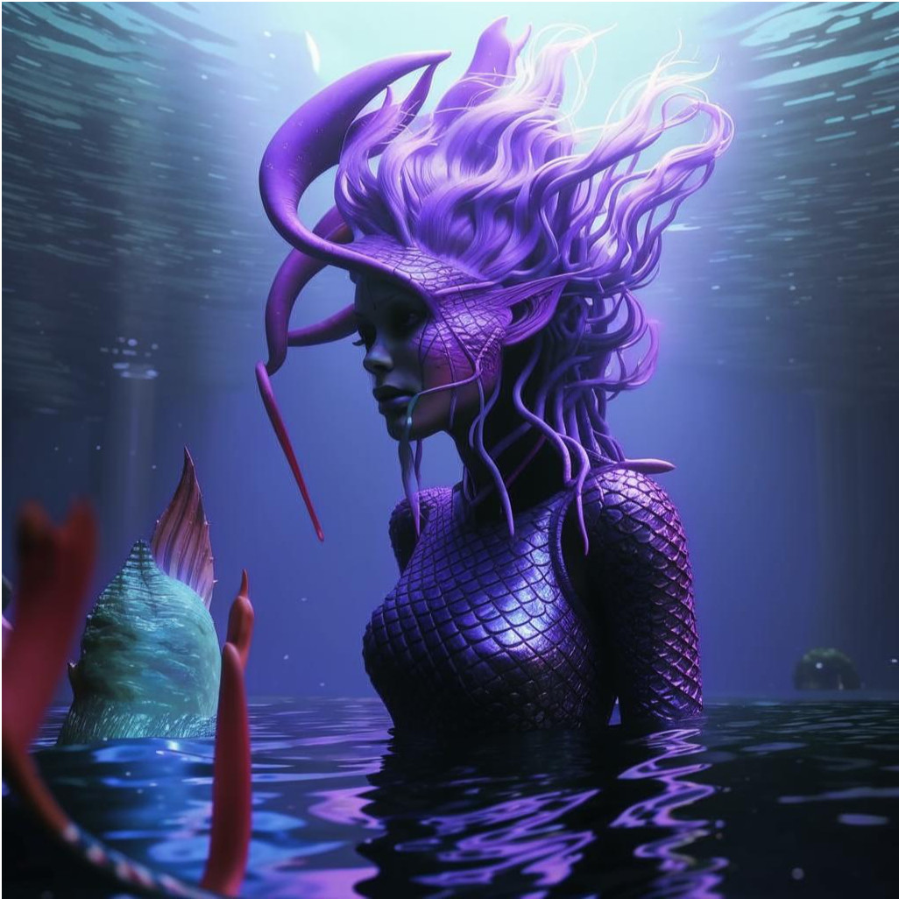

Инопланетянин – культурный феномен, гипотетический или вымышленный представитель разумной внеземной цивилизации, обитатель иных планет (чаще всего не человек). Термин «инопланетянин» может заменяться также терминами «чужак» и «пришелец» (последний вариант замены не всегда уместен). В человеческой массовой культуре инопланетянин чаще всего предстаёт в виде гуманоида. Сложились четыре своеобразных «классических» образа инопланетянина: «грей», как человекообразного существа с дряблым телом, покрытым кожей серого (греи) или светло-зелёного цвета, без волосяного покрова и с непропорционально большой головой, на которой находятся огромные раскосые глаза чёрного цвета и миндалевидной формы; «Скандинавы» (они же Норды) — по расовому типу фактически европеодные люди. Являют собой воплощенную мечту ряда земных мыслителей о совершенном человеке.
Основаниями для веры в НЛО являются свидетельства предполагаемых очевидцев, желание доверять рассказчикам фантастических историй, тенденция игнорировать опровергающие факты, пренебрежительное отношение к оппонентам, которые, по мнению верящих в НЛО, могут скрывать правду, а также стремление установить контакт с высшими мирами.
По мнению философа Пола Курца, вера в инопланетян является явлением, родственным вере в сверхъестественных существ. Уфология рассматривается им как мифология космического века. Массы охотнее верят в инопланетян, чем в существование ангелов. Уфология является результатом творческого воображения и пригодна для поэтических и экзистенциальных целей. Это направление стремится приписать людям более древнее происхождение и дать более глубокий смысл пребывания в этом мире, является результатом «погони за тайной», надежды человека на трансцендентальную значимость.
ИНОПЛАНЕТЯНИН С МАРСА
рост: доходит до 130 см
место обитания: Марс
рацион питания: камни Марса
бывают: синие, чёрные, серые.
ОБЛАЧО-ЗЕЛЁНЫЙ ИНОПЛАНЕТЯНИН
рост: доходит до 180 см
место обитания: облака
рацион питания: люди
бывают: только зелёные.
СОЛНЕЧНО-МОЗАИЧНЫЙ ИНОПЛАНЕТЯНИН
рост: доходит до 145 см
место обитания: картины
рацион питания: гуашь, масло, пастель, карандаши, акварель, акрил.
бывают: разноцветными.
ЕГИПЕЦКИЙ ИНОПЛАНЕТЯНИН
рост: доходит до 190 см
место обитания: Египет
рацион питания: песок
бывают: только жёлтые.
РОБАТА-ЛЕСНОЙ ИНОПЛАНЕТЯНИН
рост: доходит до 160 см
место обитания: еловый лес
рацион питания: люди, животные, насекомые
бывают: разноцветными.
ЛЕСНОЙ ИНОПЛАНЕТЯНИН
рост: доходит до 150 см
место обитания: еловый лес
рацион питания: люди, животные, насекомые
бывают: разноцветными.
РУСАЛКА-ИНОПЛАНЕТЯНИН
рост: доходит до 170 см
место обитания: водные объекты
рацион питания: люди, животные, рыба
бывают: сине-фиолетовые.

ВОДНЫЙ ИНОПЛАНЕТЯНИН
рост: доходит до 120 см
место обитания: моря, океаны, озёра
рацион питания: люди, животные, рыба
бывают: разноцветными.
ПОДВОДНЫЙ ИНОПЛАНЕТЯНИН
рост: доходит до 90 см
место обитания: водные объекты
рацион питания: рыба
бывают: разноцветными.
РОЗОВА-ВОДНЫЙ ИНОПЛАНЕТЯНИН
рост: доходит до 200 см
место обитания: водные объекты
рацион питания: люди, животные, насекомые, рыба
бывают: розовые.
Темчик Елизавета